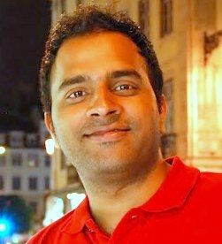

|  | Shrikanth Ganapathy |
Shrikanth Ganapathy
[10/25/2021] Joined Rivos Inc.
[10/22/2021] Left AMD Research
[01/02/2016] Joined AMD Research
[08/15/2015] Left EPFL
[05/28/2014] New Job !! Moved to EPFL
[04/28/2014] Successfully defended PhD thesis
[04/11/2014] (Invited Talk) Towards Holistic Design Approach for Improving Memory Lifetime Reliability at Telecommunications Circuits Laboratory (TCL), École Polytechnique Fédérale de Lausanne (EPFL), Lausanne, Switzerland
[02/07/2014] Successful completion of PhD Prelectura (All but dissertation)
[03/12/2013] (Invited Talk) Embedded Memory Design Challenges and Solutions : SRAM and eDRAM Perspective at Circuit Research Labs (CRL), Intel, Hillsboro, Oregon, USA
[03/05/2013] Presented our paper on Hybrid Yield Enhancement Techniques at ISQED’13 held at Santa Clara, California, USA. (link)
[10/23/2012] Recipient of the Intel Doctoral Student Honor Programme for the year 2012-2013. (link)
[10/03/2012] Presented our paper on Soft-Error Tolerant Embedded-DRAM at ICCD’12 held at Montreal, Canada. (link)
[04/01/2011] Participant in the Recerca Jove Initiative at UPC. (link)
Nivard Aymerich, Shrikanth Ganapathy, Antonio Rubio, Ramon Canal and Antonio Gonzalez, Impact of Positive Bias Temperature Instability (PBTI) on 3T1D-DRAM Cells, in Integration, the VLSI Journal , June 2012
Apostolos Kokolis, Namrata Mantri, Shrikanth Ganapathy, Josep Torellas and John Kalamatianos Cloak: Tolerating Non-Volatile Cache Read Latency , [To Appear] in Proceedings of the International Conference on Supercomputing (ICS’22), Virtual, June 2022
Athanasios Chatzidimitriou, George Papadimitriou, Dimitris Gizopoulos, Shrikanth Ganapathy and John Kalamatianos Assessing the Effects of Low Voltage in Branch Prediction Units, [To Appear] in Proceedings of the International Symposium on Performance Analysis of Systems and Software (ISPASS’19), Madison (USA), March 2019
Shrikanth Ganapathy, Shrikanth Ganapathy, John Kalamatianos, Bradford M. Beckmann, Steven Raasch and Lukasz Szafaryn Killi: Runtime Fault Classification To Deploy Low-Voltage Caches Without MBIST, in Proceedings of the International Symposium on High-Performance Computer Architecture (HPCA’19), Washington D.C. (USA), February 2019
Athanasios Chatzidimitriou, George Papadimitriou, Dimitris Gizopoulos, Shrikanth Ganapathy, and John KalamatianosAnalysis and Characterization of Ultra Low Power Branch Predictors, in Proceedings of the International Conference on Computer Design (ICCD’18), Orlando (USA), October 2018
Shrikanth Ganapathy, Shrikanth Ganapathy, John Kalamatianos, Steven Raasch and Keith Kasprak On Characterizing Near-Threshold SRAM Failures in FinFET Technology, in Proceedings of the Design Automation Conference (DAC’17), Austin (USA), June 2017
Loris Duch, Pablo Garcia del Valle, Shrikanth Ganapathy, Andreas Peter Burg and David Atienza Energy vs. Reliability Trade-offs Exploration in Biomedical Ultra-Low Power Devices, in Proceedings of the Design, Automation and Test in Europe Conference (DATE’16), Dresden (Germany), March 2016
Shrikanth Ganapathy, Adam Teman, Robert Giterman, Andreas Peter Burg and Georgios Karakonstantis Approximate Computing with Unreliable Dynamic Memories, [Invited] in Proceedings of the International New Circuits and Systems Conference (NEWCAS’15), Grenoble (France), June 2015
Shrikanth Ganapathy, Georgios Karakonstantis, Adam Teman and Andreas Peter Burg, Mitigating the Impact of Faults in Unreliable Memories For Error-Resilient Applications, in Proceedings of the Design Automation Conference (DAC’15), San Francisco (USA), June 2015
Adam Teman, Georgios Karakonstantis, Shrikanth Ganapathy and Andreas Peter Burg, Exploiting Application Error Resilience for Standby Energy Savings in Dynamic Memories, First Workshop on Approximate Computing held in Conjunction with HiPEAC (WAPCO’15), Amsterdamn (Netherlands), January 2015
Shrikanth Ganapathy, Georgios Karakonstantis and Andreas Peter Burg, Variability-Aware Design Space Exploration Of Embedded Memories, in Proceedings of the 28th IEEE Convention of Electrical and Electronics Engineers in Israel (IEEI’14), Eilat (Israel), December 2014
Shrikanth Ganapathy, Ramon Canal, Antonio Gonzalez and Antonio Rubio, iRMW: A Low-Cost Technique to Reduce NBTI-Dependent Parametric Failures in L1 Caches, in Proceedings of the International Conference on Computer Design (ICCD’14), Seoul (Korea), October 2014 (Best Paper Nominee)
Shrikanth Ganapathy, Ramon Canal, Dan Alexandrescu, Enrico Costenaro, Antonio Gonzalez and Antonio Rubio, INFORMER: An Integrated Framework For Early-Stage Memory Robustness Analysis, in Proceedings of the Design, Automation and Test in Europe Conference (DATE’14), Dresden (Germany), March 2014
Naifeng Jing, Yao Shen, Yao Lu, Shrikanth Ganapathy, Zhigang Mao, Minyi Guo, Ramon Canal, Xiaoyao Liang, An Energy-Efficient and Scalable eDRAM-Based Register File Architecture for GPGPU, in Proceedings of the International Symposium on Computer Architecture (ISCA’13), Tel-Aviv (Israel), June 2013
Shrikanth Ganapathy, Ramon Canal, Antonio Gonzalez and Antonio Rubio, Effectiveness of Hybrid Recovery Techniques on Parametric Failures, in Proceedings of the International Symposium on Quality Electronic Design (ISQED’13), Santa Clara (USA), March 2013
Shrikanth Ganapathy, Ramon Canal, Dan Alexandrescu, Enrico Costenaro, Antonio Gonzalez and Antonio Rubio, A Novel Variation-Tolerant 4T-DRAM with Enhanced Soft-Error Tolerance, in Proceedings of the 30th International Conference on Computer Design (ICCD’12), Montreal (Canada), September 2012
Shrikanth Ganapathy, Ramon Canal, Antonio Gonzalez and Antonio Rubio, Dynamic Fine-Grain Body Biasing of Caches with Latency and Leakage 3T1D-based Monitors, in Proceedings of 29th International Conference on Computer Design (ICCD’11), Amherst (USA), October 2011
Nivard Aymerich, Shrikanth Ganapathy, Antonio Rubio, Ramon Canal and Antonio Gonzalez, Impact of Positive Bias Temperature Instability (PBTI) on 3T1D-DRAM Cells, in Proceedings of the Great Lakes Symposium on VLSI (GLSVLSI’11), Lausanne (Switzerland), May 2011
Shrikanth Ganapathy, Ramon Canal, Antonio Gonzalez and Antonio Rubio, Cache Design Under Spatio-Temporal Variability, in Intel European Research and Innovation Conference (ERIC’10), Braunschweig (Germany), September 2010
Shrikanth Ganapathy, Ramon Canal, Antonio Gonzalez and Antonio Rubio, MODEST: A Model for Energy Estimation under Spatio-Temporal Variability, in Proceedings of the International Symposium on Low Power Electronic Design (ISLPED’10), Austin (USA), August 2010
Shrikanth Ganapathy, Ramon Canal, Antonio Gonzalez and Antonio Rubio, Circuit Propagation Delay Estimation through Multivariate Regression-Based Modeling under Spatio-Temporal Variability, in Proceedings of the Design, Automation and Test in Europe Conference (DATE’10), Dresden (Germany), March 2010
Nagarajan Venkateswaran, Shrikanth Ganapathy et.al., On the Concept of Simultaneous Execution of Multiple Applications on Hierarchically based Cluster and the Silicon Operating System, Large Scale Parallel Processing Workshop held in Conjuction with International Parallel and Distributed Processing Symposium (IPDPS’08), Miami (USA), April 2008
Nagarajan Venkateswaran, Karthik Chandrasekhar, Shrikanth Ganapathy, Design for Testability of Functional Cores in High Performance Node Architectures, in Proceedings of the 4th International Symposium on Electronic Design, Test and Applications (DELTA’08), Hong Kong, January 2008
PhD., Computer Architecture Technology, Universitat Politècnica de Catalunya, April 2014
M.Sc., Computer Architecture and Network Systems, Universitat Politècnica de Catalunya, July 2009
B.E., Electronics and Communication Engineering, Anna University, May 2008